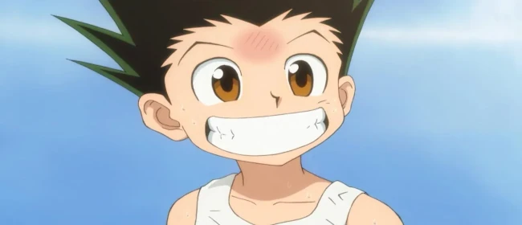
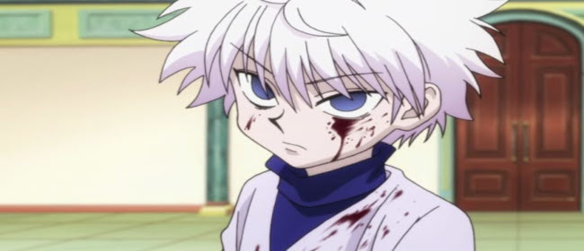
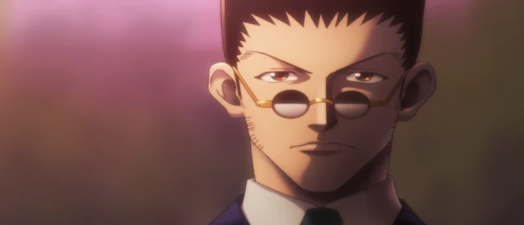
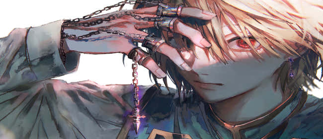
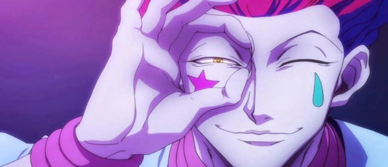

Gon Freecss é o protagonista de Hunter x Hunter, um jovem aventureiro movido por um espírito indomável e uma curiosidade vibrante. Desde pequeno, Gon sonha em se tornar um Hunter — profissionais licenciados que enfrentam perigos em busca de tesouros, criaturas raras ou conhecimento oculto. Sua principal motivação, no entanto, é encontrar seu pai, Ging Freecss, um renomado Hunter que o abandonou ainda bebê. Apesar de sua aparência inocente e comportamento alegre, Gon demonstra desde cedo uma determinação feroz, uma força física surpreendente e uma coragem que o leva a enfrentar desafios que muitos adultos hesitariam em encarar.

Ao longo da série, Gon amadurece profundamente, passando de um garoto ingênuo e otimista para alguém que confronta realidades sombrias, perdas dolorosas e dilemas morais complexos. Sua amizade com Killua é um dos pilares emocionais da história, funcionando como contraponto ao seu crescimento interior. Em momentos de crise, Gon pode revelar um lado impulsivo e até assustador, demonstrando que sua bondade está entrelaçada com uma intensidade emocional quase perigosa. Essa dualidade o torna um dos protagonistas mais humanos e imprevisíveis dos animes shounen, capaz de inspirar tanto admiração quanto preocupação, conforme avança em sua jornada em busca de si mesmo e de seu pai.
Killua Zoldick
Killua Zoldyck é um dos personagens centrais de Hunter x Hunter e melhor amigo de Gon Freecss. Nascido em uma das famílias de assassinos mais temidas do mundo, os Zoldyck, Killua foi criado desde cedo para matar, sendo submetido a treinos brutais que o tornaram incrivelmente ágil, inteligente e letal. No entanto, apesar de suas origens sombrias, Killua decide se rebelar contra o destino que lhe foi imposto e busca sua própria liberdade. Ao conhecer Gon durante o Exame Hunter, Killua encontra pela primeira vez alguém que o aceita de forma genuína, iniciando uma amizade que transforma profundamente sua visão do mundo e de si mesmo.

Ao longo da série, Killua se destaca por sua astúcia, habilidades de combate e desenvolvimento emocional. Ele é, muitas vezes, a voz da razão ao lado de Gon, protegendo-o com uma lealdade inabalável, mesmo quando seus caminhos parecem obscuros. No entanto, ele também enfrenta um intenso conflito interno, marcado pelo medo inconsciente de falhar ou machucar os outros — fruto do condicionamento cruel de sua infância. Sua evolução como personagem é uma das mais impactantes da obra, saindo da sombra da violência e da solidão para se tornar alguém que valoriza o afeto, a confiança e a escolha de seguir seu próprio caminho. Killua é, ao mesmo tempo, um guerreiro formidável e um adolescente em busca de redenção e identidade.
Leorio Paradinight
Leorio Paradinight é um dos personagens principais de Hunter x Hunter e se destaca por sua personalidade extrovertida, coração generoso e objetivos nobres. Diferente de muitos outros Hunters, Leorio não busca poder, fama ou aventura, mas sim meios para se tornar um médico e ajudar pessoas carentes, especialmente após perder um amigo por não ter recursos para tratar sua doença. Embora inicialmente pareça mais cômico e impulsivo, Leorio demonstra grande empatia e um senso de justiça forte, sendo alguém que não hesita em defender seus amigos ou confrontar autoridades quando vê uma injustiça.

Apesar de não possuir as habilidades de combate refinadas de Gon, Killua ou Kurapika, Leorio contribui com sua inteligência, coragem e lealdade inabalável. Sua determinação em alcançar seus objetivos, mesmo com limitações aparentes, o torna um símbolo de perseverança. Em arcos posteriores, ele surpreende tanto personagens quanto espectadores ao mostrar que sua força vai além do físico, sendo capaz de inspirar e mover multidões, como visto no arco da eleição. Leorio representa o lado mais humano e emocional do grupo, e sua presença traz equilíbrio à dinâmica da equipe, mostrando que heroísmo também pode estar na compaixão e no desejo sincero de cuidar dos outros.
Kurapika
Kurapika é um dos personagens mais complexos e intensos de Hunter x Hunter, guiado por um senso profundo de justiça e por uma dor que molda cada uma de suas decisões. Ele é o último sobrevivente do clã Kurta, exterminado brutalmente por um grupo criminoso conhecido como Genei Ryodan (ou Trupe Fantasma), que cobiçava os raros olhos escarlates de seu povo. Motivado por vingança e pelo desejo de recuperar os olhos de seus companheiros, Kurapika se torna um Hunter e segue um caminho sombrio e solitário, disposto a sacrificar tudo — até sua própria vida — para cumprir sua missão.

Embora inicialmente seja apresentado como calmo, racional e gentil, Kurapika revela um lado cada vez mais frio e impiedoso ao longo da série, especialmente quando confrontado com membros da Trupe. Sua especialização em Nen — a Corrente de Correntes — é adaptada unicamente para combater seus inimigos, refletindo o quão profundamente sua dor molda suas habilidades. Apesar disso, Kurapika ainda mantém um forte senso de lealdade para com seus amigos, especialmente Leorio, Gon e Killua, embora evite envolvê-los em sua cruzada. Essa dualidade entre justiça e vingança, compaixão e frieza, torna Kurapika um dos personagens mais trágicos e fascinantes do universo de Hunter x Hunter.
Hisoka Morow
Hisoka Morow é um dos personagens mais enigmáticos e imprevisíveis de Hunter x Hunter, conhecido por sua natureza excêntrica, comportamento sádico e paixão por combates desafiadores. Com uma personalidade teatral e provocadora, Hisoka transita entre vilão, anti-herói e aliado temporário, sempre seguindo seus próprios interesses. Ele é movido principalmente pelo desejo de enfrentar adversários fortes, vendo a luta não apenas como um meio de vencer, mas como uma forma de prazer e realização pessoal. Essa obsessão o leva a poupar certos personagens, como Gon e Killua, esperando que eles amadureçam para que ele possa enfrentá-los em seu auge.

Apesar de seu comportamento muitas vezes cômico ou extravagante, Hisoka é extremamente perigoso. Sua habilidade de Nen, Bungee Gum, que combina as propriedades de borracha e chiclete, reflete seu estilo de combate imprevisível e criativo, tornando-o um oponente quase impossível de antecipar. Além disso, sua mente estratégica e ausência de empatia o tornam mortalmente eficiente. Hisoka representa o caos dentro da narrativa de Hunter x Hunter — uma força que não se alinha com o bem ou o mal, mas com o prazer do conflito. Sua presença constante gera tensão e fascínio, pois nunca se sabe se ele será aliado ou ameaça no momento seguinte.